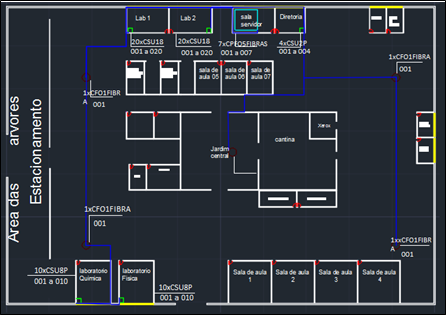

2° SEMESTRE
Elaboração do Projeto de Estruturação de uma Rede
Este projeto faz referência à matéria de Redes e Internet, cursada no segundo semestre de 2019, consistindo em três etapas, onde na primeira há a escolha de uma planta baixa retirada da internet, ou desenhada pelo próprio discente, a fim de que a referida simule uma empresa real, com todos os cômodos, corredores e até mesmo banheiros; devendo ser realizada no tempo hábil de 15 dias, essa etapa tem o peso de 3 pontos, na nota final.
Já na segunda etapa há a escolha e distribuição dos equipamentos tecnológicos, ou seja, máquinas, switches, roteadores e sala servidora; bem como indicar a passagem correta dos cabos de rede; é válido ressaltar que essa segunda etapa tem o peso de 2 pontos, na nota final, e tem-se 15 dias para realizar a entrega.
Por fim, na terceira etapa a qual vale 5 pontos da nota final, é necessário a utilização da ferramenta Packet Tracer, para indicar a configuração correta, as quais permeiam entre: IP, Gatway, DNS (se for o caso), bem como a topologia de cada cabo. Tem-se os 5 pontos computados caso o professor availe testes na rede entregue e os computadores estejam devidamente conectados.



.png)